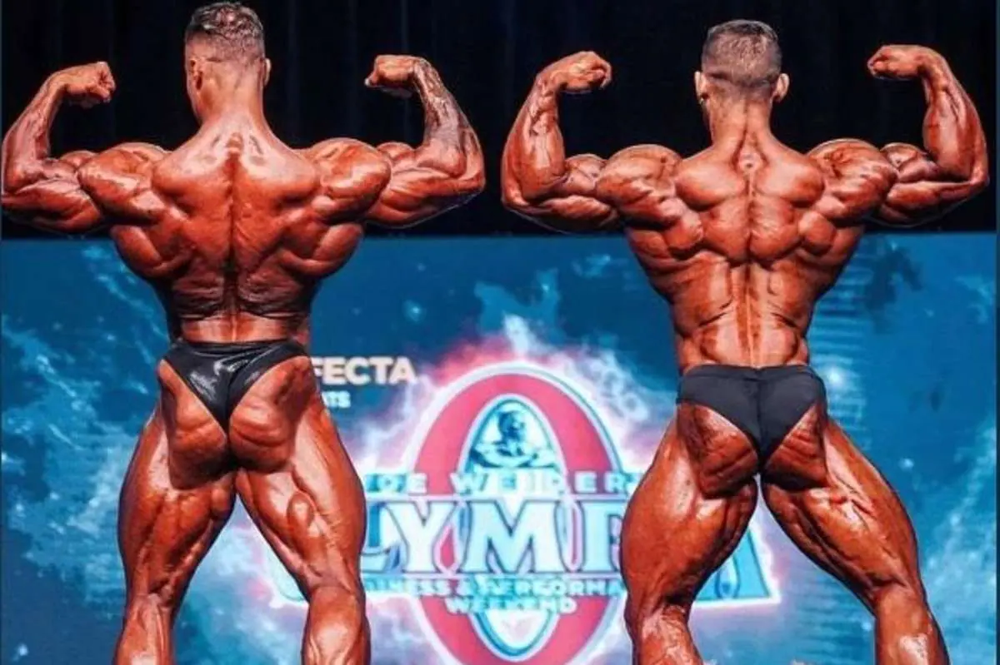

The 2023 Mr. Olympia: A Glimpse into Bodybuilding's Premier Event
As the pinnacle of professional bodybuilding, the Mr. Olympia competition is an annual event that draws the world's most elite bodybuilders to showcase their extraordinary physiques. With the 2023 Mr. Olympia just around the corner, this blog post delves into the excitement, anticipation, and significance of this prestigious competition in the world of bodybuilding.
The Evolution of Mr. Olympia:
Since its inception in 1965, the Mr. Olympia contest has evolved significantly. It has served as a platform for athletes to push the boundaries of muscle development and redefine what's possible in terms of human physique. The event has seen legendary champions like Arnold Schwarzenegger, Ronnie Coleman, and Phil Heath etch their names in bodybuilding history.
2023 Mr. Olympia - The Contenders:
This year's Mr. Olympia competition promises to be one of the most competitive yet, with a lineup of outstanding athletes vying for the coveted title. From established veterans to rising stars, the field includes a diverse array of competitors.
- Returning Champions: The defending champion, [Current Champion's Name], will be facing stiff competition as he seeks to retain his title and secure his legacy among the all-time greats.
- Emerging Challengers: Young and hungry bodybuilders like [Challenger 1] and [Challenger 2] are poised to challenge the established order, bringing fresh energy and new approaches to the stage.
- Veterans Seeking Redemption: Several seasoned athletes, including [Veteran 1] and [Veteran 2], are on a quest for redemption, hoping to reclaim past glory.
The Hype and Expectations:
The 2023 Mr. Olympia has generated immense excitement and anticipation within the bodybuilding community. Fans and experts alike are eagerly speculating about who will emerge as the victor and what new heights of muscularity and aesthetics will be reached.
Beyond the Stage:
The Mr. Olympia competition isn't just about flexing muscles; it's also a celebration of discipline, dedication, and the pursuit of excellence. Athletes competing at this level represent the culmination of years of relentless training, strict dieting, and unwavering commitment
Conclusion:
The 2023 Mr. Olympia is not just a bodybuilding competition; it's a showcase of human potential and a testament to the enduring spirit of determination. As we look forward to this iconic event, we can expect to witness incredible feats of strength and aesthetics. More importantly, it reminds us that success in bodybuilding, as in life, is achieved through hard work, sacrifice, and an unwavering belief in one's abilities.